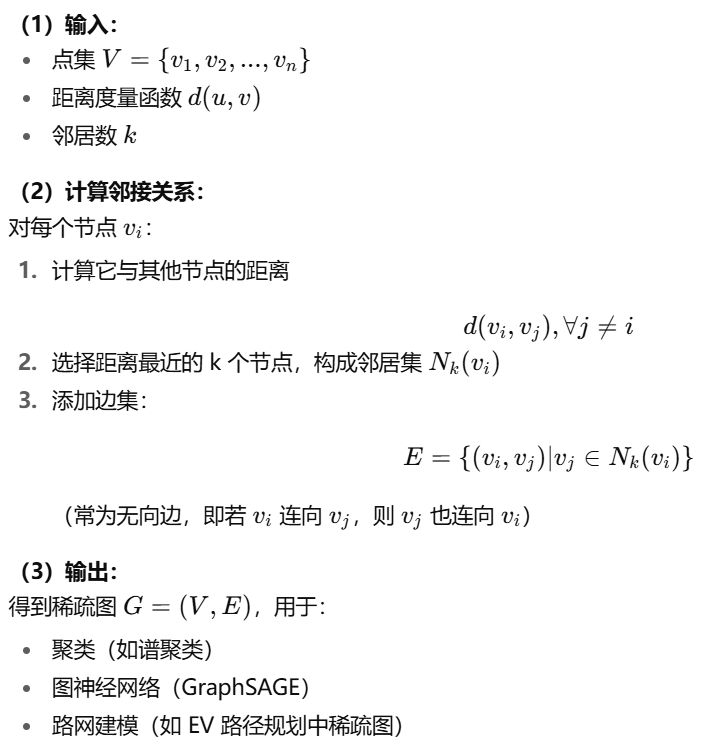
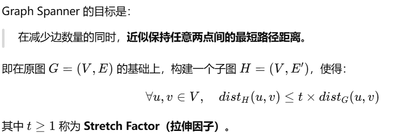
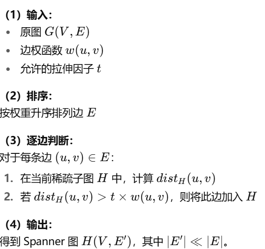

电动车逐渐得到普及，但电动车的续航问题一直令人焦虑。车企为了缓解这个问题，从大电量长续航和换电两条技术路线推进；同时，大量的基础设施铺设也在进行，充电站密度不断增加。在这种情况下，电动车的续航问题有所改观。
但是，为了获取最优续航方案，人们开电动车出行需要综合考虑续航里程、充电站位置和充电时间等多因素。 对于人脑来说，如何获取最优路线？这着实是道有点复杂的思考题。
其次，人们的里程焦虑会随着电动车的续航里程减少而不断增加 ，里程焦虑也因此成了电动车普及过程中的一个主要障碍。
为了解决这一问题，我们采取了谷歌设想过的算法，并通过百度api为缓解电动车续航焦虑，实现长距离旅行，提供了一种解决方案，这种算法能综合考虑续航里程、充电时间和行程距离，为用户提供最高效的出行路线建议。
导航过程中的最基础约束是：两个充电站之间的距离不能大于电动车的续航里程。这要求算法模型需要基于充电站构建计算图，而不是依赖道路网来进行计算。在这一图结构中，每个充电站都是一个节点，而充电站之间的路程则构成边。
在实际进行路径规划的时候，需要考虑每一辆电动车的自身特性(包括质量、电池续航水平以及充电头的标准等)。因此，算法需要识别出：连接充电站间的路径对于特定的电动车是否可行。当特定电动车的导航需求发起时，算法将会从充电站节点间找出可行的路径，而不仅仅包含起点到终点的直接路径。
所以我们项目主要流程：
1.获取电车系数和参数
2.搜索充电桩
3.建图与图稀疏化（连接构建可用边）
4.路径规划
5.获取实际路线
6.可视化
通过前端输入车辆品牌，后端获取到前端信息后从数据库获取相应品牌汽车的参数。
由于全国充电桩总数量超过1千万，且也没有途径可以获取到如此大量的充电桩，我们需要采取一些策略使充电桩的搜索尽可能集中在最优路径上，但是在路劲规划前，我们无从得知最优路径。
而对于从起点到终点的充电时间取决于总路程距离，总路程距离和行驶时间成正比。故我们采取最短时间路径作为主路径，该主路经可以视作最短路劲或者相对较短路径（受限于路网的复杂性），同时在起始电量相同的情况下，总充电量和总充电时间相对最少。
故综上所述，我们可以先调用百度api获取最短耗时路径，再沿路搜索充电桩。
如果要构建完全图，在节点数达到90时，边数就超过了单个AK的单日额度，同时，边数越多，意味着需要消耗的请求数量和耗时越多。但是我们除了限制点数量之外，还可以在请求距离前进行直线预筛，如果直线距离超过续航距离的情况下，实际距离也一定大于续航距离，就可以排除在考虑范围之外。
在获取所有直线距离符合要求的边实际距离后，再根据续航距离对实际距离进行第二次筛选。
随着点和边数的提升，所构建的图或越来越复杂，着这种情况下，我们可以考虑对图进行稀疏化处理，我们提供了两种稀疏化方法：
| 点数 | 边数 |
|---|---|
| 70 | 2415 |
| 90 | 4005 |
| 110 | 5995 |
| 130 | 8385 |
| 150 | 11175 |
在给定点集中，KNN算法通过 查找目标点的 k 个最近邻节点 ，来构建局部连接关系或进行分类/聚类/建图。
KNN 本质上是一种局部邻域结构构建方法。
---
| 优点 | 说明 |
|---|---|
| 简单高效 | 实现容易，可用 KDTree、BallTree、Faiss 加速 |
| 局部性强 | 保留最近的空间关系，适合高维嵌入空间或地理邻域 |
| 参数直观 | 只需选择合适的 k |
| 缺点 | 说明 |
|---|---|
| 全局结构差 | 只保证局部连通，可能造成全局断裂 |
| 参数敏感 | k 太小会导致稀疏、断裂；k 太大则过密、增加计算量 |
| 无几何保证 | 无法保证任意两点之间的路径长度接近原始距离（即没有距离保真性） |


| 优点 | 说明 |
|---|---|
| 保持全局距离结构 | 近似保持任意两点的最短路径长度（有 stretch 保证） |
| 全局连通性好 | 不易出现断裂问题 |
| 可控制稀疏程度 | 调整ttt影响边数量：小ttt→ 精确但密集，大ttt→ 稀疏但近似 |
| 缺点 | 说明 |
|---|---|
| 计算复杂 | 需要多次最短路计算，复杂度较高 |
| 实现困难 | 相比 KNN，需要复杂的路径与距离维护结构 |
| 不一定保留最近邻关系 | 优化目标是全局距离保持，不一定符合局部几何邻域 |
| 对比项 | KNN | Graph Spanner |
|---|---|---|
| 目标 | 构建局部邻域关系 | 保持全局距离近似 |
| 稀疏性来源 | 固定每个节点的 k 个邻居 | 动态选择满足 stretch 的边 |
| 连通性 | 易断裂 | 通常连通性更好 |
| 距离保持性 | 局部距离精确，全局不保真 | 全局距离有近似保证 |
| 计算复杂度 | O(nlogn)O(n \log n)O(nlogn)（近邻搜索） | O(mlogn)O(m \log n)O(mlogn)或更高（多次最短路） |
| 适用场景 | 嵌入空间、GNN、地理局部关系 | 稀疏图优化、路径规划、图压缩 |
| 可调参数 | k | stretchttt |
| 场景 | 推荐算法 | 原因 |
|---|---|---|
| 车辆局部路径规划（如自动驾驶、EV路线） | KNN | 保留局部几何结构，快速搜索邻近节点 |
| 长距离路线稀疏化、充电站图优化 | Graph Spanner | 保持全局连通性与距离近似 |
| 多层结构（局部 + 全局） | KNN + Spanner混合 | 局部连通用KNN，全局稀疏化用Spanner |
如果不考虑充电时间，利用上述节点和边构成的图可以使用Dijkstra算法和A*算法直接找到可行的路径并进行优化(用户在每个节点都会充满电)。在这种情况下，算法不会考量充电时间。
因此，如果要考虑充电时间，就需要构建新的图结构，将每一个充电节点复制并替代原有的节点。其中，一半的节点对应驶入充电站时的剩余电池电量x(0%-100%)。另一半节点则对应驶出充电站时的电池电量y(0%-100%)。
在驶入节点x和驶出节点y间(满足约束y>x)建立新的连接边，并赋予对应的从x到y的充电时间。当一段旅途从A驶向B时需要消耗z部分的电量，那么就需要在A所有的驶出边上与B所有的驶入边上引入电量消耗边(x-z)。通过这样的转换后，就可以利用Dijkstra或A*算法来求取解决方案了。
路径规划模块返回了一个包含起点终点以及充电桩的列表，我们按顺序获取两点间的具体路径。将最终路径绘制到地图上实现可视化
由于http请求耗时，同时百度的api有着QPS限制，导致发送http请求占据了程序运行90%的时间，我们选择采用：多AK轮询&异步运行&限制QPS的策略来加速运行速度同时节约请求额度。
原因：如果一个AK的QPS是n，那10个就是10n。
遇到一个需要大量相同类型http请求的任务，我们可以根据任务大小和复杂度（http请求的量和速率）拆分任务，并分配给一个或多个AK。
如果同一类http请求涉及多个AK，我们可以通过异步来优化请求速率，我们利用asyncio模块，为某个任务设置统一的函数作为异步操作入口，在开始前，自动分配AK后，初始化tasks，再通过asyn和await操作异步执行tasks内的子任务。最后从入口函数退出，结束事件循环。
对于某个AK，服务端限制了其QPS，为了避免额度浪费，以及无效请求的时间浪费，我们需要对某个AK进行QPS限制，设置一个中间商模块（类），统一发送异步请求，在发送请求前，先检查该AK是否符合发送条件（QPS是否在限制内）。
我们采用令牌桶的方法检查每个AK的QPS并给出等待时间，但是这里虽然有限制，但出于各种原因，还是没能稳定控制在范围内，只能说相较于不控制的情况下稳定。